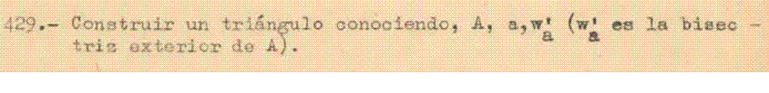

Problema 284
429.- Construir un triángulo conociendo A, a, w'a (w'a es la bisectriz exterior de A)

Sapiña, J. (1955): Problemas Gráficos de Geometría,Litograf. Madrid. (Aparejador, Perito Industrial, Profesor ) (p.65)